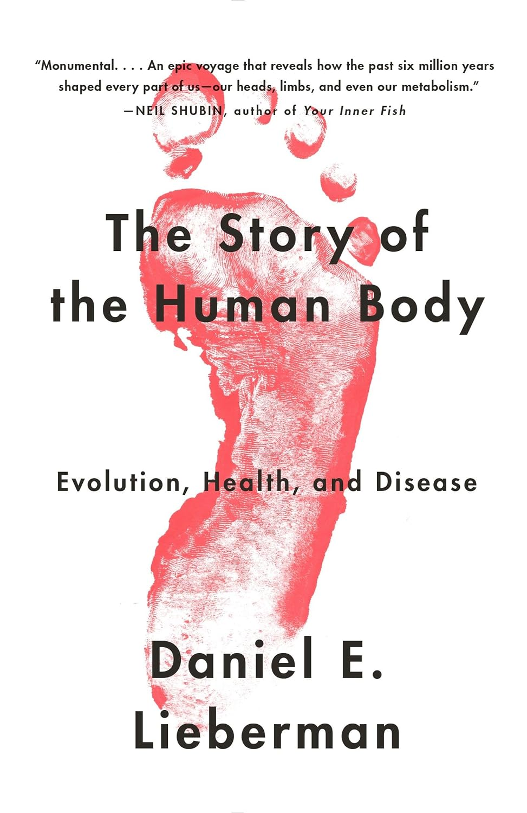

2004年，哈佛大学人类进化生物学教授丹尼尔·利伯曼（Daniel E. Lieberman）与犹他大学的丹尼斯·布兰布尔（Dennis Bramble）在《自然》杂志发表论文《耐力奔跑与人属的进化》，提出一个当时颇具争议的观点：人的身体不是为奔跑速度、而是为长距离耐力而塑造的——发达的臀大肌、富有弹性的跟腱、遍布全身的汗腺，都是为了在正午高温下把猎物一路追到中暑倒下。这一"天生会跑"的假说后来经克里斯托弗·麦克杜格尔的畅销书《天生就会跑》为大众所知，也让常年赤脚示范跑姿的利伯曼得了个"赤足教授"的外号。《人体的故事》出版于2013年，正是他把二十余年田野与实验室研究收束成的一部通史。
全书分为两半。前半部追溯六百万年间身体如何被一步步组装起来：直立行走如何解放了双手、却也埋下腰痛的隐患，长跑耐力如何塑造了骨盆与足弓，用火烹饪如何供养出耗能巨大的大脑，投掷能力如何改写了狩猎方式与肩臂的解剖结构。后半部抛出全书的核心概念——"失配性疾病"（mismatch diseases）：人的基因适应的是采集狩猎时代的环境，却被抛进农业革命与工业革命造出的新世界，于是2型糖尿病、近视、扁平足、骨质疏松、蛀牙与阻生智齿、下背痛、胃食管反流等一长串慢性病接踵而至。利伯曼进一步提出"病态进化"（dysevolution）：当我们只治症状、不改环境，再把这套致病的环境原封不动交给下一代，疾病便以文化而非基因的方式一代代自我复制。
这本书虽出自进化生物学，却收获了跨领域的背书。《你身体里的鱼》作者、古生物学家尼尔·舒宾称它是一部"epic voyage"（史诗般的航程），带读者看清过去六百万年如何塑造了我们身上的每一部分；麦克杜格尔的原话是"Riveting, enlightening, and more than a little frightening…. No one understands the human body like Daniel"（扣人心弦，令人开眼，还着实有点吓人……没有人比丹尼尔更懂人体）。中文版由蔡晓峰翻译，2017年由浙江人民出版社引进，后有2023年新版。
把一本讲人体进化的书放进以投资与商业为主的书架，理由在于它演示的那种思考方式。查理·芒格反复主张把生物学、尤其是达尔文式的进化论纳入他所说的"多元思维模型"，本书架上的《探索智慧：从达尔文到芒格》走的正是同一条路。利伯曼的"失配"与"病态进化"其实提供了一副识别陷阱的框架：一个系统为了短期舒适所做的优化，可能正在加重它长期的病灶，而只治标的干预还会让致病的环境自我延续下去。这种因果错位，在身体里、在市场里、在制度里，同样成立。